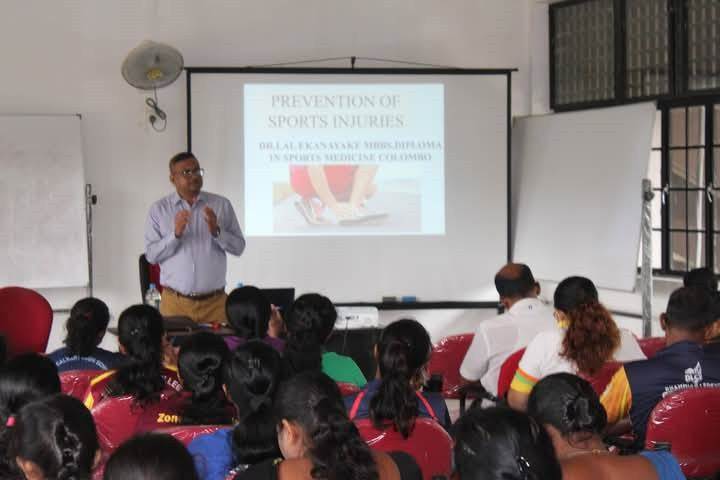
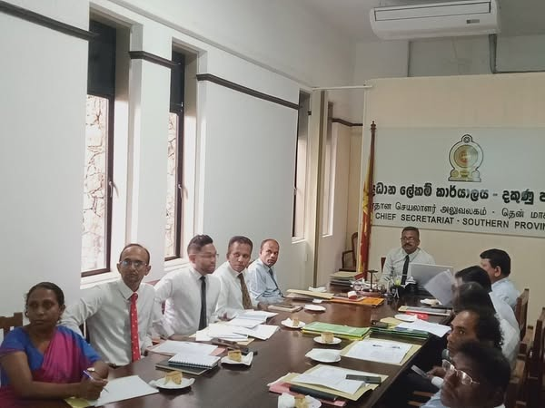
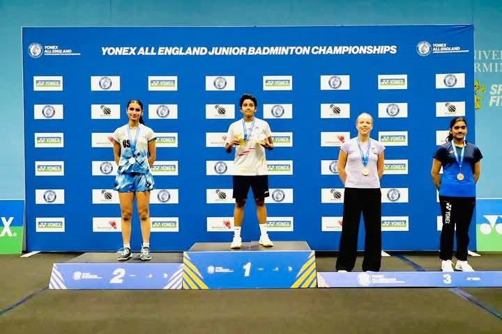

Upcoming Events
Check out our latest events and workshops

“ක්රීඩා වෛද්ය විද්යා පුහුණු වැඩසටහන — දකුණු පළාතේ සාර්ථක නිමාව”
─ ලාල් ඒ්කනායක මහතාගේ සහභාගීත්වයෙන් අතිවිශේෂ අවස්ථාව

ජාතික මලල ක්රීඩා ශූරතාවලියේ කාන්තා ශූරිය
නදීෂා රාමනායක, 103වැනි ජාතික මලල ක්රීඩා ශූරතාවලියේ දක්ෂතම කාන්තා ක්රීඩිකා ලෙස සම්මානයට

දකුණු පළාත් රාජ්ය සේවා ක්රීඩා උළෙල 2025
දකුණු පළාත් රාජ්ය සේවා ක්රීඩා උළෙල : සාකච්ඡාව ප්රධාන ලේකම් කාර්යාලයේදී පැවැත්වෙයි

දකුණු පළාත් අභිමානය: රනිත්මා ලියනගේ
රනිත්මා ලියනගේ, සමස්ත එංගලන්ත කනිෂ්ඨ බැඩ්මින්ටන් ශූරතාවලියේ රන් පදක්කම දිනා ගනී